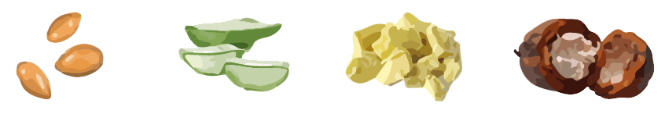

Bioevolve B12 Plus+ is a multifunctional regenerating cream containing vitamin B12 (methylcobalamin) as the main active ingredient. Methylcobalamin is the most active form of B12. It absorbs very quickly and is immediately ready for use by our body. Unlike cyanocobalamin, no conversion is required. B12 Plus+ Cream is also clinically proven to be safe, effective, and well tolerated. This product is unscented and non-greasy with fast absorption rate.
"Ethical Science - Conscience completes our Science"
Apply on cleansed area TWICE daily or as needed.
It can be used as makeup primer and primer prior to applying facial masks to boost the mask's effects and enhance hydration.
Daytime: cleanser -> toner -> serum (if any) -> B12 plus cream -> suncreen -> makeup
Nighttime: cleanser -> toner -> serum (if any) -> B12 plus cream
Bioevolve B12 Plus+ cream's powerful regenerating effect makes it an unique All-In-One product to improve chronic skin conditions such as eczema, dermatitis, psoriasis, diaper rashes and many more hard-to-deal-with skin conditions.
eczema or dermatitis (child & adult)1,2 and psoriasis3,4
for aging, dry, dull, and tired skin, improves elasticity and firms skin
from acne, wound and mosquito bite
soothes burnt skin, reduces redness, inflammation and desquamation
Can be used as moisturizer or makeup primer
repairs cracked skin and relieves irritation after shaving and lightens razor scars
diaper rashes, prickly heat
relieves dry and sensitive skin
argan oil, shea butter, cocoa seed butter, aloe
Within the regeneration process, the cream also functions as a skin rejuvenation to repair and refine skin texture, calm irritation after shaving and lighten razor scars.
Besides the strong treatment against multiple skin conditions, B12 Plus+ Cream is also a daily moisturizer for your whole body. It is suitable for all skin types and ages (both face and body).
For all age groups. Can be incorporated into your regular skin care routine or be used to help with chronic skin conditions
Vitamin B12, Butyrospermum Parkii (Shea Butter) Seed Oil, Aloe Barbadensis (Aloe) Leaf Juice, Theobroma Cacao (Cocoa) Seed Butter, Tocopherol Acetate
